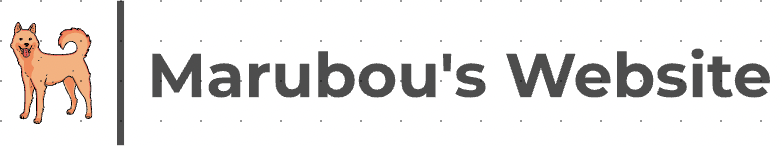

ABOUT
豆柴が大好きな大学3年性
豆柴が大好きな大学3年性のマル坊です！常に豆柴のことが大好きで社会人になったら豆柴を飼おうとしています。
Profile
メンター名 : マル坊学年 : 大学3年性
大学・学部名 : 慶應義塾大学 環境情報学部
趣味 : 豆柴・カフェ巡り・ビリヤード
国籍 : 韓国
研究室・ゼミ : 安宅和人（自然言語処理班・教育班）

豆柴が大好きな大学3年性のマル坊です！常に豆柴のことが大好きで社会人になったら豆柴を飼おうとしています。

自分の大好きなポケモンはゲンガーです。可愛いお目目が特徴的💜

動物の中で一番大好きな犬はしば犬です！友達によくしば犬みたいと言われて好きになりました🐶

お菓子の中では、マカロンが一番大好きです！マカロン制作動画をきっかけに食べたい意欲が上がりました！

WebDesignについて学び始めました。配色やデザインなどを積極的に学びたいと思います！
卒論に向けた検証実験を行なっています。実験に使う資料を作成する際に使うデータが膨大ですが、頑張って終わらせます！

インターンで会社内の各部署にETL業務を行なっています。勉強することや書くことが多くて、大変です。